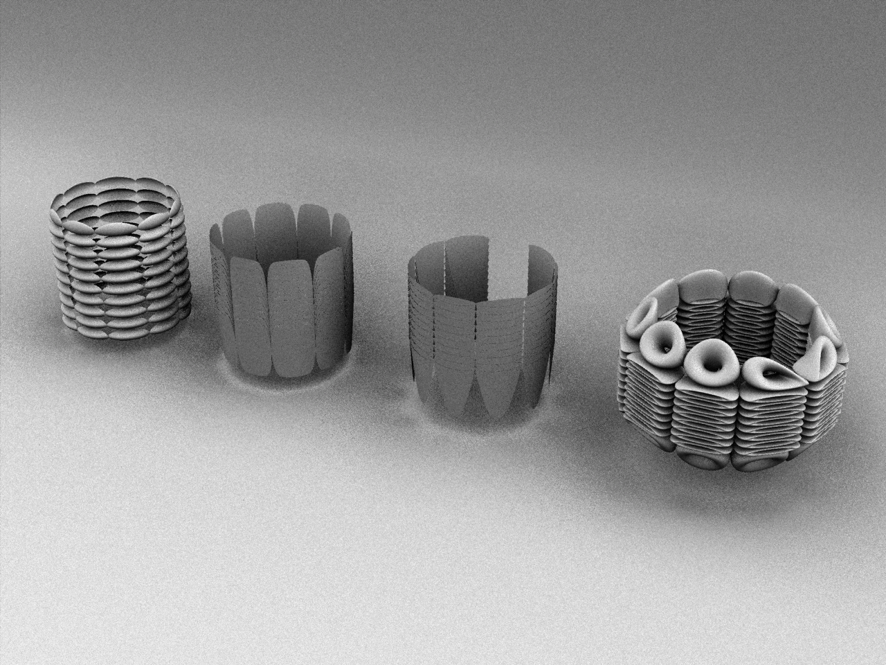

Arash
Nouri
program
Interaction Design
course
VDES29207 3D Design 2: Modeling
semester
Winter 2021
project 3 / immersive environments
All previously developed 3D skills used to create a life-sized outdoor structure that fits
into an existing outdoor space.
Research conducted on existing structures.
site plan
Google Maps' rendering of Albert Standing Park Ditto, satellite view circa 2021 Dimensions of exterior of park as well as certain elements measured
using Google Maps
Dimensions of exterior of park as well as certain elements measured
using Google Maps
concept visualization
Geodesic dome structure similar to those found in playground, used for shelter from weather and as a meeting place Ditto Covered walkway, provides shelter similar to geodesic dome Final render of geodesic dome overlayed over larger circular area of park.Dome is 16 meters in diameter. Properly scaled people and trees placed around dome for perspective Final render of geodesic dome overlayed over smaller circular area of park.
Dome is 15 meters in diameter. Properly scaled people and trees placed around dome for perspective
research
https://www.dezeen.com/2019/03/11/building-raincoat-prototype-sidewalk-labs-toronto-smart-city/I remember visiting Sidewalk Labs frequently when they were still running in Toronto. I saw the raincoat from when it was just in the conceptual stage to when they actually built one outside their office.
They had quite a few different concepts for modular structures that could be added to existing building and public spaces, and each provided some added function (e.g. cover from rain/snow, shade from intense sun, etc.).
I really liked their push for creating modular structures and trying to work with an existing space/structures instead of tearing everything down and starting over. It's definitely something that I wanted to evoke in my own project.
I've always like this structure at the Toronto Music Garden because it takes an otherwise ordinary and empty space and makes it a point of interest.
This structure in particular doesn't seem to have any added functionality like shelter from rain/snow, but it's visually interesting and fits into the space it occupies really well, especially when vines and other plants start growing on it.
process work
Initial model of geodesic dome.42 vertices and 80 faces.
Final dome contained more vertices and faces. Dimensions of initial dome once cut in half.
10.5 meters in height and 16 meters in diameter. Cube with a height of 1.8 meters placed inside dome to provide a sense of scale. Final scene. Low poly people used in scene.
Heights vary from 1.52 meters to 1.87 meters. Render of scene without backdrop. Ditto. Ditto.
works cited
1 “Albert Standing Park Improvements.” City of Toronto, 16 Feb. 2021, www.toronto.ca/city-government/planning-development/construction-new-facilities/improvements-expansion-redevelopment/albert-standing-park-improvements/. Accessed 24 Apr. 2021.
2 Cogley, Bridget. “Sidewalk Labs Unveils Building Raincoat Prototype for Toronto Smart City.” Dezeen, 11 Mar. 2019, www.dezeen.com/2019/03/11/building-raincoat-prototype-sidewalk-labs-toronto-smart-city/. Accessed 24 Apr. 2021.
3 Mok, Tanya. “Toronto Music Garden Is the Serene Bach Inspired Park by the Waterfront.” Www.blogto.com, 23 Aug. 2020, www.blogto.com/city/2019/05/toronto-music-garden-serene-bach-inspired-park-waterfront/. Accessed 24 Apr. 2021.
4 PeToDes. “Low Poly Trees - Free Asset Pack,” Sketchfab, 21 May 2019, sketchfab.com/3d-models/low-poly-trees-free-asset-pack-13968bae706b4d6ba5074be9a0a0f974.
5 Recreation, Toronto Parks, Forestry and. “Toronto Music Garden.” City of Toronto, www.toronto.ca/data/parks/prd/facilities/complex/1707/index.html. Accessed 24 Apr. 2021.
6 Studio Ochi. “Freebie - Lowpoly People,” Sketchfab, 26 May 2017, sketchfab.com/3d-models/freebie-lowpoly-people-3c57a85ef5464aa7973f466383d69c48.
project 2 / generative design
Generative design using 3D grids mapped onto scale models of real-world
objects.
Developable models created using waffling and piping techniques.
original objects
Flower pot, 15 cm x 17 cm Vase, 25 cm x 17 cm
Vase, 25 cm x 17 cm
scale models
Scale model of flower pot Scale model of vase Waffled version of vase modelpanelling objects
 Panelling on flower pot Panelling on vase
Panelling on vase
developable models
All the various shapes used to panel around base models. Front row and middle row demonstrate waffling and piping techniques used to turn digital shapes into developable models.process work
 All models
All models
 Developable models
Developable models
 Flower pot w/ 3D grid
Flower pot w/ 3D grid
 Panelling results with flower pot
Panelling results with flower pot
 Vase w/ 3D grid
Vase w/ 3D grid
 Panelling results with vase
Panelling results with vase
project 1 / sprints / light
A series of sprints exploring the use of light and colour in interactive 3D objects. Programmed using Arduino. Neopixel and neopixel ring used as light sources.
Link to GitHub repository
All code sourced from IXD-Pcomp GitHub
setup
Initial setup using one Neopixel and an Arduino Unoexperiment 1
Light being transmitted through a reusable silicone strawexperiment 2
Light being refracted by an ornamental glass containerexperiment 3
 Light being refracted by a mason jar
Light being refracted by a mason jar
experiment 4
Light being transmitted through cheeseclothexperiment 5
Light being transmitted through a canvas bagexperiment 6
Light being diffused by a frosted glass ornamentexperiment 7
Setting up the Neopixel ring for the first timeexperiment 8
Light from a Neopixel ring being diffused by a plastic ringexperiment 9
project 1 / sprints / motion
A series of sprints exploring the use of motion and automation in interactive 3D objects. Programmed using Arduino. Position rotation servo motors used to create movement.